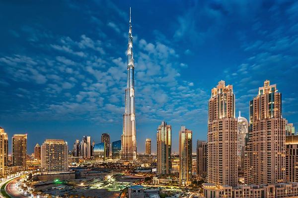
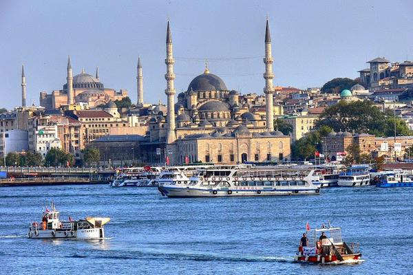
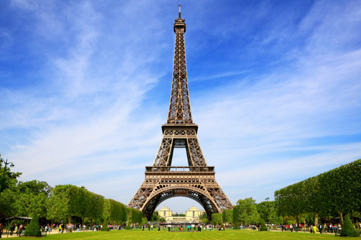
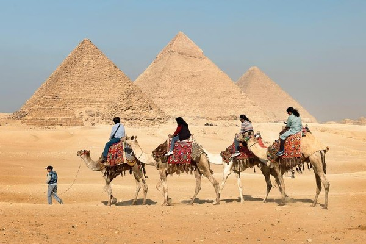
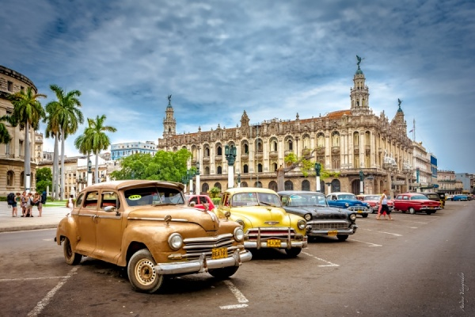

Дубай

Дубай – популярный туристический центр, важный финансовый и коммерческий центр Объединённых Арабских Эмиратов. Дубай впечатляет своей современной архитектурой, теплыми водами Персидского залива, возможностями для активного досуга и развлечений. В Дубае проводятся международные выставки и конференции. Беспошлинная торговля позволяет совершать выгодные покупки в крупных торговых центрах эмирата. Отдых в Дубае комфортабелен для абсолютно всех категорий туристов. Большинство отелей четыре-пять звезд, которые предоставляют, как правило, своим гостям бесплатные трансферы до пляжей и торговых центров. Два пляжных парка: AlMamzarPark и JumeirahBeachPark предлагают понежиться на мелком песочке и искупаться в чистых водах Персидского залива. Экскурсионная программа здесь на высоте. Помимо самого высокого здания в мире Бурдж-Халиф, туристы смогут посетить многочисленные мечети, старые кварталы Дейры, ветряные башни Шиндага, деревню ловцов жемчуга и историко-этнографическую деревню. Молодежь сможет безудержно веселиться в одном из стильных ночных клубов Дубая. Для детей обустроены красочные игровые площадки, детские познавательные центры, аквапарки. Дубай является одним из самых жарких и засушливых городов Земли. Средняя температура воздуха летом составляет +35,1, а зимой + 20. Осадки выпадают, в основном, в феврале и марте. Лучше всего отправляться на отдых в Дубай в ноябре, январе и апреле.
Турция

Отпуск в Турции придется по душе и любителям спокойного и созерцательного отдыха. Гостеприимные турецкие курорты порадуют туристов прекрасными пляжами и морем. Целыми днями можно покачиваться на волнах, нежиться на солнышке, любоваться красивейшей природой и мечтать о том, чтобы так продолжалось всю жизнь! Температура в Турции радует своим постоянством практически круглый год – в сезон, с апреля по октябрь, термометр держится на отметке от 25 до 35 °C. Не останутся равнодушными и искатели приключений. Они будут ездить на увлекательные экскурсии, посещать культурные и археологические памятники и получать массу незабываемых впечатлений. Им будет дана возможность проникнуть вглубь культурных традиций, изучить обычаи удивительно богатой культуры - а это??, поверьте, настоящее приключение!
Париж

Столица Франции, столица моды, штаб-квартира ЮНЕСКО и город влюбленных – несравненный Париж. Отдых в Париже – это гуляние по мощеным улочкам, изучение достопримечательностей, утренний кофе с круассаном в очаровательном открытом кафе, шопинг в бутиках мировых брендов. Париж манит своей роскошью, романтической атмосферой, энергичным ритмом. Различные отели от шикарных пятизвездочных гостиниц до уютных, недорогих хостелов позволяют приехать на отдых в Париж туристам разных социальных классов. Климат Парижа – умеренный. Зима здесь холодная, лето жаркое. Самый дождливый месяц май, а засушливый – февраль. Не смотря на погоду толпы туристов, любующиеся Эйфелевой башней и Лувром, не иссякают. Но самыми популярными месяцами года для путешествия в Париж все-таки являются: мокрый май, солнечный июнь и знойный август.
Египет

Египет – земля мистики и древней истории, колыбель цивилизации фараонов, оставившей потомкам множество загадок. Историческое прошлое привлекает не только археологов со всего мира, но и огромное количество путешественников. Современный Египет, столицей которого является многомиллионный Каир (самый большой город Африканского континента), удивляет пирамидами Хеопса, Хефрена и Микерина, Большим Сфинксом на плато Гиза, величественными храмами Луксора и Карнака, Долиной Царей в Фивах, архитектурными изысками Александрии эллинского периода. Для детального знакомства с многими из них едут на экскурсию по Нилу – реке, которая стала источником жизни в египетской пустыне.
Куба

>
Наибольшей популярностью у туристов пользуется пляжный отдых на Кубе. Различные горящие туры на Кубу позволяют путешественникам отлично провести время. Большинство пляжей являются муниципальными, кроме тех, которые являются собственностью гостиниц. Интересно и незабываемо можно встретить Новый год на Кубе. Остров имеет прекрасно развитую инфраструктуру. Любители шопинга могут приобрести черный коралл или изделия, выполненные из него. Проводя отдых на Кубе летом, можно также купить различные товары, изготовленные из панциря черепахи, национальные музыкальные инструменты или одежду. Также популярен местный ром. На острове преобладает креольская кухня. Туры на Кубу из Москвы позволят насладиться экзотичными и невероятными блюдами. Кафе и рестораны расположены в больших городах и на курортах.